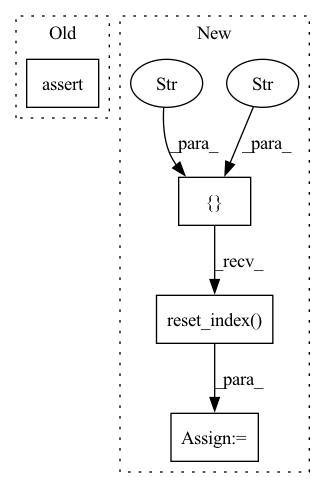

Pattern ID :34841
Before Change
for col in df_disk:
assert_eq(result[col], df_disk[col])
else:
assert len(df0) == len(df_disk)
@pytest.mark.parametrize("part_mem_fraction", [0.01])After Change
// we don"t have a deterministic ordering here, especially when using
// a dask client with multiple workers - so we need to sort the values here
columns = [ "label", "x" , "y", "id" ] + cat_names
got = result.sort_values(columns).reset_index(drop=True)
expect = df_disk.sort_values(columns).reset_index(drop=True)
assert_eq(got, expect)
In pattern: SUPERPATTERN
Frequency: 3
Non-data size: 4
Instances Fragment ID: 99906836
Project Name: nvidia/nvtabular
Commit Name: 9218dd5b7d5244e860ddf45b637e3f482c157156
Time: 2021-02-10
Author: github@benfrederickson.com
File Name: tests/unit/test_dask_nvt.py
M Class Name: AnonimousClass
N Class Name: AnonimousClass
M Method Name: test_dask_workflow_api_dlrm(9)
N Method Name: test_dask_workflow_api_dlrm(9)
M Parent Class:
N Parent Class:
M File Name: tests/unit/test_dask_nvt.py
N File Name: tests/unit/test_dask_nvt.py
M Start Line: 93
M End Line: 122
N Start Line: 93
N End Line: 120
Before Change
def test_finishes(df):
stack = Stack([KNN()], n_folds=2, budget=1)
stack.fit_predict(df, 1)
assert True
After Change
def test_finishes(df):
stack = Stack([KNN()], n_folds=2, budget=1, seed=1)
pred = stack.fit_predict(df, 1).toPandas()
pred = pred.loc[:, ["user_id", "item_id"]].sort_values("user_id").reset_index(drop=True)
res = pd.DataFrame({"user_id": [1, 2, 3, 4], "item_id": [7, 5, 4, 7]})
pd.testing.assert_frame_equal(pred, res)
Fragment ID: 99906829
Project Name: sb-ai-lab/replay
Commit Name: 9405dd1ebbc8691fd238984b6d1862fcc0f86c3e
Time: 2020-09-15
Author: yytamm@sberbank.ru
File Name: tests/models/test_stack.py
M Class Name: AnonimousClass
N Class Name: AnonimousClass
M Method Name: test_finishes(1)
N Method Name: test_finishes(1)
M Parent Class:
N Parent Class:
M File Name: tests/models/test_stack.py
N File Name: tests/models/test_stack.py
M Start Line: 24
M End Line: 25
N Start Line: 24
N End Line: 27
Before Change
def test_finishes(df):
stack = Stack([KNN()], n_folds=2, budget=1)
stack.fit_predict(df, 1)
assert True
After Change
def test_finishes(df):
stack = Stack([KNN()], n_folds=2, budget=1, seed=1)
pred = stack.fit_predict(df, 1).toPandas()
pred = pred.loc[:, ["user_id", "item_id"]].sort_values("user_id").reset_index(drop=True)
res = pd.DataFrame({"user_id": [1, 2, 3, 4], "item_id": [7, 5, 4, 7]})
pd.testing.assert_frame_equal(pred, res)
Fragment ID: 99906843
Project Name: sb-ai-lab/replay
Commit Name: af83229f4f08642d7822f0d7395dd27ccba9aaf2
Time: 2020-10-13
Author: yytamm@sberbank.ru
File Name: tests/models/test_stack.py
M Class Name: AnonimousClass
N Class Name: AnonimousClass
M Method Name: test_finishes(1)
N Method Name: test_finishes(1)
M Parent Class:
N Parent Class:
M File Name: tests/models/test_stack.py
N File Name: tests/models/test_stack.py
M Start Line: 24
M End Line: 25
N Start Line: 24
N End Line: 27